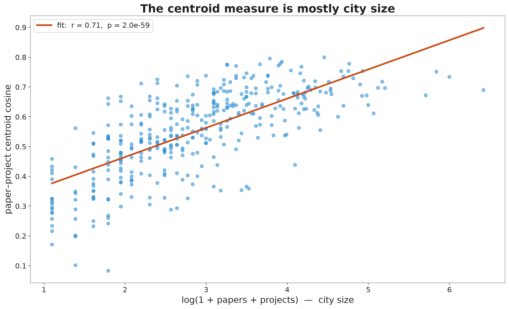

Results
This page is the analytical heart of the project. It follows the same path as the tripartite notebook: build up a measure of whether a city’s projects, papers, and patents are related, watch the first one fail, replace it with one that holds, and then spend most of the effort trying to break the answer it gives. Everything runs on the shared semantic space from the Methods page, where all 17,826 artifacts sit as points and 80 topic clusters mark the field’s dense regions.
The obvious measure, and why it fails
Start with the simplest idea. Average each city’s projects into one vector, average its papers into another, and measure the angle between them with cosine similarity. High similarity should mean the students and academics point at the same part of the field.
Taken at face value it looks like a resounding yes. The centroid similarity is high almost everywhere, on the order of 0.95. But it is high even for city pairs that share no obvious subject, which is the tell that the measure is reading something other than local relatedness. Regress the overlap on how many documents a city has, and the finding crumbles: overlap correlates about 0.71 with document count, so roughly half its variance is just city size.
The mechanism is a known property of high-dimensional averaging, sometimes called centroid collapse. Each document vector lives near a dense core where the general vocabulary of synthetic biology concentrates. As a city accumulates more documents, its average is pulled toward that core, so large cities end up with centroids near each other and near the global mean, whether or not their students and academics actually work on the same things. The centroid measure answers how much a city publishes, dressed up as a question about what it publishes. It was the project’s first real result, and it was a negative one, but the mechanism pointed straight at the fix.

The real test: shared topics
The failure was averaging. So stop averaging and count topics instead. Represent each city not as one vector but as a profile across the 80 clusters: which topics do its projects fall into, and which do its papers fall into? Relatedness becomes a sharper question. Not “do the two point the same way on average?” but “do they co-invest in the same specific subjects?” A city can be huge and productive across the whole field, earning a high centroid similarity with everyone, while its students and academics work on entirely different corners. The topic-profile measure separates that case from a city where both genuinely concentrate on the same handful of clusters.
For each pair of artifact types in a city, we take the L2-normalized cluster-frequency vectors and read off their cosine overlap. That raw number means nothing until it is held against a baseline, and the baseline is the whole game. We build it with a within-country permutation test: inside each country, shuffle which city’s paper profile is paired with which city’s project profile, thousands of times, and recompute the mean overlap. Every shuffle keeps each city’s document counts and every cluster’s popularity fixed, so any excess that survives must come from the specific co-location of topics, not from size or from some topics being universally popular.
# src/analyze/relatedness.py — the core of the decisive test (abridged)
def build_city_type_vectors(clustered, k_clusters):
# one L2-normalized cluster-frequency vector per (type, city)
...
def pair_permutation(vecs, type_a, type_b, cities, country_of, n_perm=2000):
va, vb = vecs[type_a], vecs[type_b]
observed = np.mean([np.dot(va[c], vb[c]) for c in cities]) # real pairing
null = []
for _ in range(n_perm):
# inside each country, break only the local city-to-city pairing
shuffled = repair_within_country(cities, country_of)
null.append(np.mean([np.dot(va[c], vb[s]) for c, s in shuffled]))
excess = observed - np.mean(null)
p = (np.sum(np.array(null) >= observed) + 1) / (n_perm + 1)
return {"excess": excess, "p": p}The real cities beat the null. Running the test for all three ordered pairs gives a clear and uneven picture.
| Pair | Cities | Excess overlap | p | Lift | Beats null? |
|---|---|---|---|---|---|
| Project × paper | 120 | +0.0102 | 0.0077 | 1.30× | yes |
| Paper × patent | 44 | +0.0352 | 0.0055 | 1.27× | yes |
| Project × patent | 28 | +0.0041 | 0.24 | 0.98× | no |
Once city size and topic popularity are held fixed, a city’s projects and papers share specific topics more often than chance allows, and so do its papers and patents. Its projects and patents do not. That gap is not a hole in the analysis; it is the finding. The three artifact types are not equally related, and academic research sits in the middle. A joint three-way test on the 28 cities with all three types is significant (excess +0.016, p = 0.007), but it is carried entirely by the two paper links.

Three ways to try to break it
A single clean result is a hypothesis until it has been attacked. The permutation test rules out size and topic popularity, but it rests on choices made before the test ran: which countries are in the sample, how many clusters HDBSCAN produced, and how deep a city’s corpus has to be to count. Each could, in principle, have manufactured the result, so we varied each in turn.
Drop a whole country. Remove each country and rerun. The result barely moves. Removing the United States, which supplies a large share of both teams and papers, leaves the paper × patent excess intact (p = 0.001 on the remaining cities) and softens project × paper only to p = 0.068. Removing China leaves it essentially unchanged. No single national system drives the finding.
Change the number of topics. Replace the HDBSCAN clusters with k-means at resolutions from fine to coarse, and recompute all three pairwise excesses at each. Project × paper stays significant at every reasonable resolution. Paper × patent stays significant across the sweep. Project × patent never crosses the threshold at any k. The ladder is stable: projects relate to papers, papers relate to patents, and the direct project-to-patent link never achieves significance regardless of how finely the field is sliced.
Starve the sample. Vary the minimum documents a city needs to be included. The excess persists across the range. It shows more cleanly in deeper cities, exactly what a real signal does as measurement improves; a spurious result would not reliably strengthen when the data get richer.

The k-sweep also settles whether fine-tuning inflated the result. Run side by side, the base SPECTER2 and the fine-tuned adapter both produce significant paper × project excesses at every resolution. The fine-tuned model shows somewhat larger paper × patent excesses, which is expected, since the training data included patent-paper pairs and the adapter was built to bring those closer. Neither model produces a stable project × patent link. The finding is present without fine-tuning; the adapter sharpens it rather than inventing it.
Do the parts agree?
Every result so far lives inside the semantic space, which invites the deepest objection: what if the whole thing is an artifact of how SPECTER2 reads text? If the model imposed some systematic structure, every check would agree with every other for purely internal reasons, and we would have measured a property of the model rather than of the cities. The only clean way to rule this out is to check the semantic structure against something the model never touched.
The BioBricks give us exactly that. Each part carries a functional class, promoter, coding sequence, reporter, terminator, and so on, and a city’s students leave a fingerprint in the registry: the mix of part classes they built and deposited. That fingerprint is made of physical genetic components and functional labels, not of any language the model could read. We build one city-by-city distance matrix from the semantic topic profiles and a second from the BioBrick class mixes, then ask whether they agree with a Mantel test, which permutes city labels to get a valid null.
They line up. Across the 164 cities with enough data in both registers, the correlation is \(r_M = 0.127\) (\(p = 0.0005\)): cities whose students build similar mixes of genetic parts also tend to have similar topic profiles across their projects, papers, and patents. The magnitude is moderate, and honestly so, because a city’s toolkit and its topics are related but not identical. What matters is that two independent windows onto the same cities, one built from words and one built from DNA parts, see the same shape. A structure imposed by the language model would have no reason to match the distribution of promoters and coding sequences across cities. That it does is the single strongest piece of evidence that the relatedness is real, not a property of the measuring tool.

Dynamic coupling
The permutation test shows the alignment is real, but it is static: it cannot say whether the alignment is a living year-to-year coupling or a structural feature baked into each city’s long-run specialization. A difference-in-differences design separates the two. Split time into five-year periods and ask, within a single city and topic, whether a rise in one artifact type’s share is accompanied by a rise in the downstream type’s share, after differencing out each city’s standing profile and each topic’s global trend.
Within the tripartite sample (44 to 46 cities, far smaller than the 161 in the bipartite project-paper analysis), the paper → patent link is positive and significant: \(\hat\beta = +0.355\) (\(p = 0.028\), \(N = 44\)). Inside a city and topic, a five-year stretch of elevated academic output predicts elevated patenting in the same topic, beyond what the city’s history or the topic’s commercial trend would predict. The project → paper link is not significant in this smaller sample (\(p = 0.19\), \(N = 46\)), which contrasts with the positive and significant bipartite result (\(\hat\beta = +0.0026\), \(t = 4.06\), \(N = 161\)); the difference is most simply explained by power, since the tripartite sample is under a third the size. The project → patent link, on only ten cities, is not interpretable.

A natural follow-up asks whether that coupling has a preferred direction across years: do projects tend to precede papers, and papers precede patents? We built annual topic-frequency vectors per city and measured how similarity changes as one type is offset against the other by up to three years. Both profiles come out flat, with overlapping confidence intervals, and a within-city year-shuffle permutation test finds no significant asymmetry (p-values from 0.51 to 0.93). This is a null result for this sample size, not a demonstration that ordering is absent: the larger bipartite analysis did find a significant lead-lag peak at the same lags. When all three artifact types must be present at once, the sample gets small and selective, and the modest annual signal is below what it can resolve.

What it shows, and what it can’t
The work is shaped like a star, not a triangle. Papers are the hub: a city’s papers relate to its projects, and its papers relate to its patents, but its projects and patents are the most distant pair. The chain is strongest between neighbors and weakest across the full span from student bench to commercial filing, which is what you would expect if capabilities travel in steps with academic research as the middle link. The pattern is size-independent, survives dropping any country, holds across cluster resolutions and depth thresholds, appears in the base model before any fine-tuning, and is anchored in the physical parts the students built through the Mantel test.
None of this shows that student projects cause later papers, or that papers cause patents. The three artifact types share many local causes: the same universities host teams and labs, the same mentors advise students and run labs, the same firms and funders shape what everyone works on. Any of these common causes could produce the pattern with no direct flow of ideas between artifact types. What the data establish is real and size-independent local relatedness. What they cannot establish is which mechanism produces it.
The carbon-capture case study narrows this general result to one subfield and one set of cities, and the Explorer lets you search any city and see its projects, papers, and patents in the shared space.